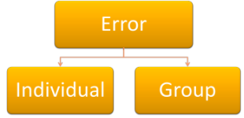

Understanding error
 |
Everyone makes mistakes |
We are focused here on the errors made by learners of
the language.
The example above is not one of those. It is
somewhat akin to the kind of error made by native
speakers of a language which is normally referred to as
a slip of the tongue, although, in this case, it is a
slip of the paint sprayer.
We are also not concerned with the sorts of errors made
by children acquiring their first language(s).
Such errors do happen frequently, of course, and we
often hear children selecting the wrong past-tense form
or failing to produce the auxiliary verb or the
determiner in something like:
Going to park
(where I want to go to the park is intended).
Errors of that kind are often referred to as
transitional forms.
In what follows we will make a distinction between three sorts of mistakes in learner production or reception:
- Slips

If, during a lesson on producing oral recounts of past events, a learner at B2 level says or writes something like:
I go yesterday
then you may be safe in assuming that if you stop the learner and say:
Go?!
you will probably elicit something like:
Sorry: went, of course.
The fact that the learner is able immediately to self correct shows that this wasn't a real error at all. It was a slip caused by inattention, tiredness, cognitive overload or simple carelessness.
In a lesson in which correct use of past verb forms is the target (or one of them), some corrective action probably needs to be taken. In other circumstances, the slip can be safely ignored. - Attempts
If during the same kind of lesson, a learner at A1 level produces something like:
If I was go to the party yesterday I saw him
then we have a very malformed sentence indeed and it is vanishingly unlikely that the learner could self correct without a great deal of external input concerning how to make a conditional sentence that refers to a past unfulfilled contingency. In fact, such is the gap between the learner's current knowledge and the target conditional form that you would probably be unwise to treat the attempt at all. It would be possible to say something like:
No, that should be: "If I had gone to the party yesterday, I would have seen him"
but the likelihood of the learner being able to absorb the data and put it into practice is not strong.
An attempt, therefore, is a mistake which is caused by simply not having the data to make a well-formed utterance. - Errors

If, during the same lesson, a learner produces:
The sun shone when we were walking in the park
we have some evidence that the learner is attempting to refer to a background continuous state and a progressive action. We know that a better sentence would be:
The sun was shining when / while we were walking in the park
but it is unlikely that the learner could self-correct except by guesswork and assuming that the alternative tense form is required. The error is not wholly unacceptable because we do often use a simple form of the verb to refer to a continuous state as in, for example:
Mary appeared upset while we were talking in the pub
in which the first verb form is simple past but the reference is to a continuous state. It would be wrong to say:
Mary was appearing upset while we were talking in the pub
because of the semantic nature of the verb and that is not to do with the grammar point.
What is happening here is describable as a real error. The learner is in the process of acquiring the system but has not yet fully mastered it in terms of the aspectual nature of the verbs which can be used to talk about past states or events.
This is the kind of mistake one would expect if a cognitive view of language learning is to be believed. A grammar rule has been encountered and the learner has hypothesised that because Mary appeared can be seen as a continuous background state, so, too, can The sun shone. This is a semantic issue, not a grammatical one.
In what follows, we are concerned with errors, not slips or attempts.
How do you feel about errors? |
An elementary student you are teaching has made this error.
*I catched the train to London last week
with my friend and his brother.
The error is made in free speech and you have very recently covered the
language point in question.
Which of these adjective(s) might, at different times, most typically
describe your feelings:
| DISAPPOINTED | DISCOURAGED | IRRITATED | AMUSED |
| CHALLENGED | ENCOURAGED | HAPPY | BORED |
| INDIFFERENT | UNSURPRISED | SURPRISED | ANGRY |
| INTERESTED | RELIEVED | ASTONISHED | TIRED |
| BAFFLED | COMPETENT | FRUSTRATED | TOLERANT |
What considerations (L1, level etc.) affect your attitude?
 |
How we view error and how we view learning |
If you feel disappointed, angry, frustrated, irritated etc., then it
seems that you believe that error is somehow dysfunctional: a failure of
the learning process. In other words, you view an error as an
unwanted form.
If, on the other hand, you feel encouraged, interested or even happy, it
could mean that you feel that making error is just part of the
learning process, and a positive one at that.
View 1
Error is to be avoided at all costs in the classroom because
language learning is essentially about making good habits and
automatising language output. People learn by repetition of
correct models, not by making mistakes or testing hypotheses.
There has been insufficient training in this case of model sentences
such as I caught a bus, I caught a train, I caught a tram etc.
View 2
Errors of this sort, in which the student has correctly
inserted the -ed ending for the simple past tense in English
show that a rule is being acquired. He or she has hypothesised
that the correct past tense ending for the verb catch is the
same as for a large number of other verbs in English. The
hypothesis was incorrect in this case but all that needs to be done now
is to lead the learner to understand that the rule doesn't work for all
verbs in English. Learners need to understand the limitations and
restrictions but acquiring the past tense ending is a positive step on
the road to fluency and accuracy.
In other words, you see error as an opportunity to shape the learner's
language production positively and you view error as a developmental
form.
Which view do you hold?
 |
Testing hypotheses |
Look at this exchange between a parent and young child:
| Mother: | Did Billy have his egg cut up for him at breakfast? |
| Child: | Yes, I showeds him. (Hypothesis 1) |
| Mother: | You what? |
| Child: | I showed him. (Hypothesis 2) |
| Mother: | You showed him? |
| Child: | I seed him. (Hypothesis 3) |
| Mother: | Ah, you saw him. |
| Child: | Yes, I saw him. |
| from Corder, SP (1981: 11) | |
The point of this is to show that children make hypotheses as they
go along and test them to see the reaction. In this example, the
child is making three hypotheses (indicated above). What are they?
Click
when you have an answer.
Hypothesis 1: the past tense of show
might be showeds. This is scotched by the mother's 'You
what?' so the child retries (correctly?) with I showed him.
Hypothesis 2: the verb
show means observe. Both verbs involve sight and
looking so it's not unreasonable. The child is alerted to the
problem by the mother's repetition (with rising intonation,
probably).
Hypothesis 3: the past tense of see is regular (as it is
with show). Here the mother corrects rather than
questions.
It is something of a leap to assert that adult learners of a foreign language also consistently make hypotheses like these but it would explain the I catched example, above, wouldn't it?
According to Pit Corder, whose example this is, foreign language learners have to make similar hypotheses all the time. In particular, humans ask questions like:
- Are the systems in the language I'm learning the same as they are in the language(s) I know?
- If they are different, how do they work?
The guide to the similarities and differences between first and second language acquisition, and that to interference and facilitation, linked in the list of related guides at the end, has more on this.
 |
Interlanguage |
This is a key concept and describes where the learners' current language mastery stands on a scale from knowing nothing of the target language to complete mastery. Diagrammatically, it can be pictured like this:

The diagram oversimplifies and hides some interesting ideas
concerning the sources of error and the current state of the
learners' knowledge.
What studies showed was that although some errors
were the result of applying first-language rules to the target
language (which would indicate the transfer of language habits),
some errors indicated that learners were
creatively constructing
rules and hypotheses to explain the data to which they were exposed.
If this is the case, then teaching needs to address the positive
role of error, the concept of noticing the difference between one's
own output and native-speaker models and the supply of adequately
rich linguistic data for the learners' cognitive processes to work
on.
It is, of course, crucial to know where a learner's interlanguage currently is. There are four reasons (at least) for this. Can you come up with them? Click when you've made a note (or at least thought about it!).
| Reason 1: | it tells us what the learner is likely to know already and that helps us plan what to teach. |
| Reason 2: | it helps us to decide what to correct in class. There's little point in trying to correct a very elementary student who is trying to produce a complex third conditional form with a modal auxiliary verb because it will take too long and probably confuse the learners. |
| Reason 3: | it helps us to recognise whether an error should be corrected by you or whether the error can be self-corrected by the learner. |
| Reason 4: | it helps us to set the level of challenge so the learner is operating from the known to the unknown in small steps, not just being thrown in the deep end. |
In what follows, you'll need to download a worksheet.
As we go along, it will help you to think up examples of the sorts of
errors your learners make in the various categories of error we
are looking at.
 |
Categorising error |
How systematic? |
|
|
Pre-systematic errors are those made with language the
learner has not encountered. For example, a student guessing that
a word is similar in meaning to something which looks the same in her
language or trying to form a complex sentence with relative clauses that
she hasn't yet learned how to do. This is the kind of mistake that
was classified at the outset as an attempt. |
|
| Now complete part 1 of the worksheet. | |
Productive or Receptive error |
|
| This is an easy category. Either the error is produced in writing or speaking (it's productive) or in listening or reading (it's receptive). Which is easiest to spot? How do you identify if someone has made a receptive error? |
|
| Complete Part 2 of the worksheet. | |
Is it just me? |
|
|  |
If all or most people in a group are making the same
error, how do you deal with it? If one person is making the same kind of error only, how do you deal with that? |
| Complete part 3 of the worksheet. | |
Is it obvious? |
|
 |
You can probably guess the
distinction here. Covert errors occur when, for example, a student says I have been to London – is that right? You can't tell, of course, without finding out what the student actually wants to say. If the learner produces I have been to London yesterday then the error is overt and you can decide whether and how to deal with it. |
| Try part 4 of the worksheet. |
What sort of error is it? |
|
| Before we tackle this area,
can you make sense of the descriptions of error types here? Phonological error seems simple enough but what do the others mean? |
|
| Do part 5 of the worksheet now and then click here. |
| Type of error | Explanation | Examples |
| Referential or Lexical | An error in the lexical system | We don't have enough furnitures I showed my passport to the immigrant officer He moved the car's turning wheel the wrong way |
| Syntactical or Textual | An error in the structural or grammatical system | There are 4 forms
of this kind of error:
|
| Phonological | A pronunciation error | Using /ɪ/ instead of /i:/ in seat Errors are also often made in intonation patterns and in other prosodic features. |
| Interpretive | Getting the wrong message | Understanding How long are you staying? as How long have you been here? |
| Pragmatic, Social or Stylistic | Using the wrong style or register | (To a waiter) Excuse me sir, can I order now? My cat's had babies Included in this category are less obvious errors such as a failure to respond to a complement or an offer because of a lack of awareness of the cultural norms. |
Click here for tests of your understanding of error so far.
 |
Sources of error |
It isn't enough to know what sort of error we are dealing with.
We also need to be able to suggest why the error occurred in the
first place.
There are three obvious sources.
- Ignorance
- the learner may simply have never learnt the form or the meaning
and is just stabbing in the dark. This is most common at lower
levels because that's where learners' needs often outstrip their
abilities to produce language. For example, if a lower-level
learner produces a syntactical error like:
*If he didn't came to my party I was sad
or a lexical error such as:
*I did not have informations from that
then the cause may often be an ignorance of how unreal events are expressed in English in the first example or a lack of lexical knowledge concerning countability and the meaning of prepositions in the second case.
We are dealing with attempts, here, not errors proper. - Overgeneralising the rule
- sometimes, when a rule has been learned, learners will
over-extend it.
For example, if you have learned the rule to add -ed to make a past tense, it seems logical to form catched. Equally, over-extending a rule might lead to the production of wonderfuller.
This source of error is also known as ignorance of rule restriction (i.e., not knowing the limits of the rule's applicability) or analogy (i.e., assuming that a rule which works perfectly well in one utterance will be applicable to a similar one). - First language interference
- all learners, especially adult ones, will draw on language(s)
they know to try to figure out a new one. This is most obvious
in the area of pronunciation, of course, but occurs frequently in
other areas:
Structure: the learner's first language may have a structure that looks similar but means different things.
For example, the German structure of ich habe gesehen [I have seen, literally] often is better translated into English as I saw rather than I have seen. That's only one reason for finding out a bit about our learners' first languages.
Lexis: many languages, and not only European ones, have words which look the same but have different meanings.
For example, simpatico in Italian means nice or friendly, sensibel in German means sensitive and un smoking in French is a dinner jacket.
There are many hundreds of these so-called false friends. There's a set of exercises on this site focused on false friends and it is linked below. There are, it should be remembered, even more true friends, i.e., words which look the same in the learners' first languages and mean pretty much the same.
Appropriacy: in many languages, such as Greek, it is perfectly acceptable, for example, to go into a shop and state
I want ...
or
Give me ...
with no please to soften the demand or instruction although the form of the verb in the second case will signal that it is marked for politeness. That will not work well in most English-speaking cultures.
Languages differ in a huge variety of ways and some of the differences are not immediately obvious because interference can result in unnatural rather than patently wrong production. For example, selecting:
A bank is on the corner
instead of
There's a bank on the corner
may not be obviously flawed but is unnatural in English which deploys the anticipatory there-construction much more widely than many languages do.
There is a guide to language interference and facilitation, linked below. - Teacher-induced error
- regrettably, many errors are caused or allowed to persist because of the teacher's behaviour, and materials. This includes giving learners ambiguous, incomplete or false information. There is a separate guide to teacher-induced error on this site, linked below.
Here's a brief summary of this as a reminder.
| Related guides | |
| teacher-induced error | for the guide to this avoidable error source |
| correcting learners | this is a straightforward guide in the initial plus section which may remind you of important techniques |
| first-language acquisition | for a guide to some current theories and how they may be relevant to teaching languages |
| second-language acquisition | for a guide to some current theories |
| language interference and facilitation | this guide considers how interlingual phenomena may hinder or aid the learning of another language |
| feedback | which covers dealing with error rather than just analysing it |
| types of languages | for a guide which sets out the structural ways in which languages differ |
| markedness | how items are distinguished across languages varies quite dramatically and is the source of much language which is unnatural when not plain wrong |
| cognate words | for a guide to the area of lexical overlap and differences |
| false friends | this is a link to the learner exercises in this area |
Reference:
Corder, SP, 1981, Error analysis and interlanguage, Oxford:
Oxford University Press